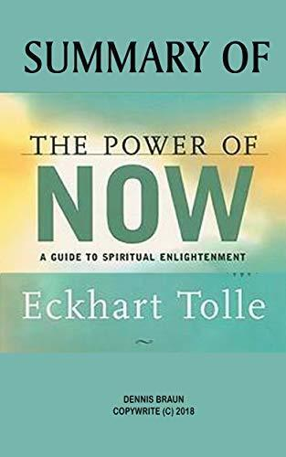
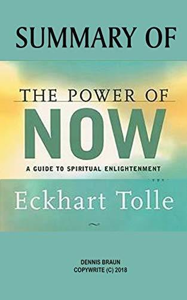
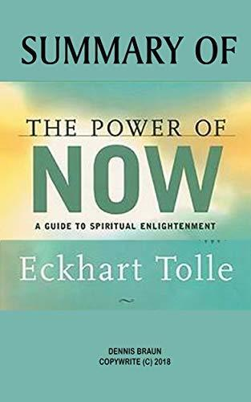

Welcome to my blog. Today's book discussion is called Born a crime.
I will be discussing on what i would name the book and
discuss on certain section of the
book.
Lauging through the walls is the name i would give to Born a Crime because of Noah's ability to find humor during the harsh realities of apartheid. Trevor noah used humor to survive of his painful experience growing up under apartheid. The challenges he encountered from poverty to racism,made the person he is. Through out Born a Crime,Trevor shows that humor is not just a scape but a tool to cope,resisit and tranform trauma into strength and understanding.
Having spent three years in the scary times of war freedom wasn't just an idea .It was like that
open sky for a trapped bird. It was the feeling of being safe and able to do what i wanted with out
no one saing "no".The idea of some one wanting a free
spirit only to imprsion them is beyond hatered.
I believe such behaviour stems from a deep insecurity,a need to control.
It is expected of women to shoulder the domestic duties while also excelling
professionaly. If women dream "too big" sometimes their partenrs even society try to dim their light.
when partners say they love,the possesivness disguised as love-are the bars ready to keep her locked
in as Abel did to patricia afraid to be them selves.
Abel,like many people today,is drawn to
independent
and strong woman,a contrast to the roles of society has historically assigned.But when he said putting
her
in cage it shows a basic misunderstanding of love and partnership.True connection thrives on mutual
respect
of eachother's
compnay.
Today's gender role are shifiting. Women are being encoraged to chase careers and dream big. Yet,when
their success shine traditional expectations,partenrens even society subtly try to hold them down. I
see this in different conversations with friedns when a woman prioritize her career over a merriage
or refuse to settle,she gets labeled as "too much". Love mixed with insecurity can become a cage
rather than safe place.
True relationships however should be space of freedom not a control.Loving
someone is accepting thier full self not shrinking them to fit to your comfortzone.Abel's desire to
capture
and contain
what he admired in patricia reflects misunderstanding.Love should never be about ownership,it
demands mutual respect and to let eachother fly not to hold each other's wing.
Hi, I am Semhal Estifanos
I am an intern at AkiraChix. Currently studying software development. I really enjoy reading books and talking about books.
